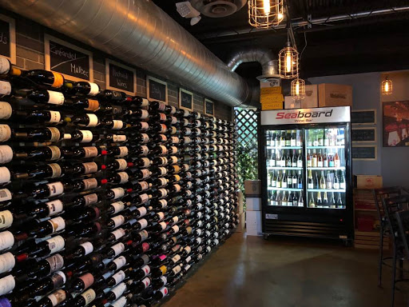
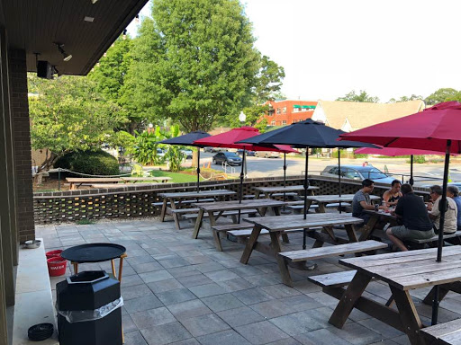
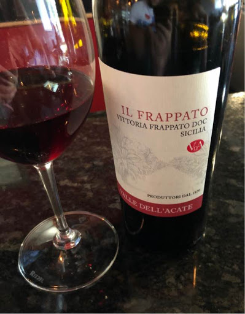

Seaboard Brewing and Wine Bar
Downtown Matthews

Note: This article was first posted on August 23, 2018 here
Wine bar and brewery you say? Sounds like the perfect spot for a birthday party. In this case, mine. Seaboard is perfect for hanging out with a diverse group of drinkers since they are a brewery with a wine room. The prices are affordable with beers coming in at an average of $5-6 a pint and bottles of wine with prices as low as under $20. We started with $6 glasses of rose before sharing a few bottles with friends. Non-wine drinking friends were able to get some delicious beer, include 24 beers on tap (8 of which are brewed by Seaboard).
We munched on soft pretzels (7/10) and a charcuterie board (8/10), which comes with Orange Blossom honey, Lusty Monk mustard, Divina Fig jam, almonds and more! The goat cheese was by far the best part. For a more robust meal, go for a margherita or mushroom pizza from the Exchange Pizza Depot (housed in a small building beside the taproom). They offer 12″ Neapolitan style pizzas, featuring fresh and (if available) local ingredients!
In addition to the drinks and food, there are corn hole boards set up outside. While we sat inside since it was over 90 degrees the day we went, the patio at Seaboard is gorgeous and spacious. Overall, Seaboard is the perfect place for winos (like me), beginners, or for those just wanting to have a drink. They focus on smaller wine producers allowing to keep prices low and quality high. No pretentious or intimidating attitudes about wine here. It’s a great place to learn and try something new while having a great time.
 Location and hours:213 North Trade St
Matthews, NC 28105
Sunday: 12PM-10PM | Monday: 4PM-11PM | Tuesday-Thursday 12PM-11PM | Friday-Saturday: 12PM-12AM
Weekly Tasting Time: Tuesdays 6pm-8pm for $10 there are typically 5 wines with some sort of theme such French or Italian or New Grapes you haven’t heard of.
Pro Tip: Come with friends and get a bottle! You’ll save some money and have more options. If you are by yourself go for one of the $6 daily specials. Seaboard only carries high quality wine, so you get to try something new and keep your wallet intact. Also, work with the staff to find a great bottle to fit your taste, while having an open mind. With a wide selection from all over the world, asking those who know the selection best will be a big help!.
Events: Trivia Mondays 7-9pm. Check Facebook or Instagram for most up to date list of events.
Need to Know: Seaboard offers a monthly wine club where members get 3 bottles of wine for $50/month. The first month is 50% off. In addition, members also get 10% off instore purchases and tasting events. On a separate note, Seaboard regularly has events on wine and beer pairings. Check facebook, instagram, or their website for details.
My Wine Selections: $6 daily glass specials; bottles: Ameztoi Txakolina ($30), Dolcetto ($17), Italics 16 Appellations ($85)

*** Additional Selection from Kyle, Seaboard’s Wine Manager: Oregon Pinot Noir from Cristom Vineyard. He also loves the Txakolina mentioned above.